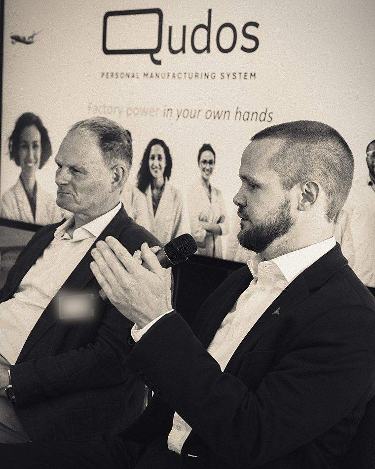
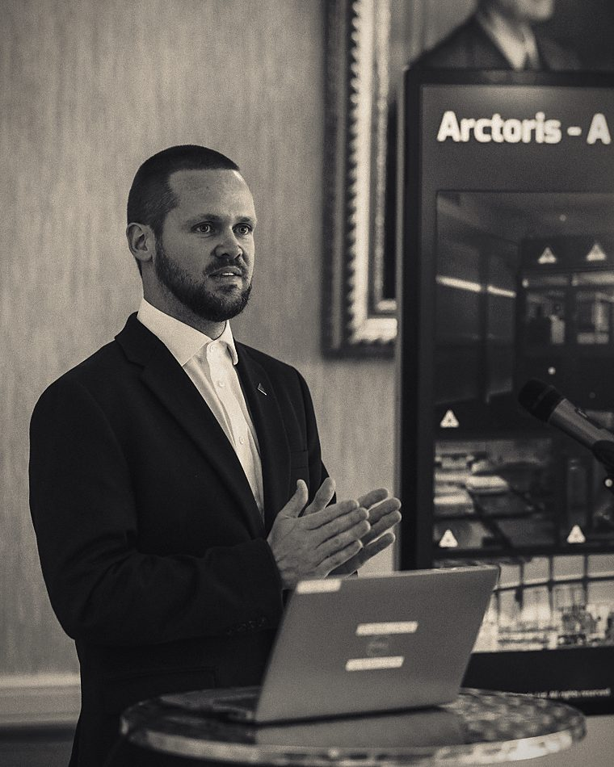
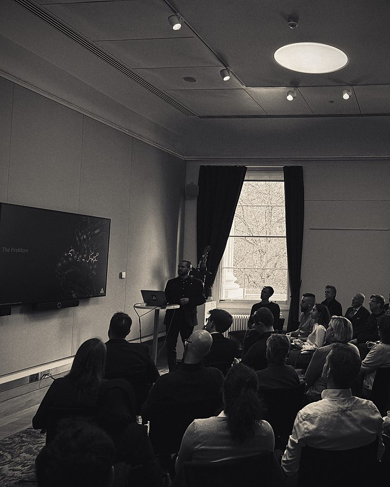

About
A builder first.
Crucible Consulting is led by Tom Fleming, who spent a decade as co-founder, COO, and CEO of Arctoris, building a fully automated, data-native drug discovery company.
Tom is an operator-scientist: a chemist by training who went on to build and run a deep-technology company through every stage, from founding to scale. At Arctoris he co-founded and led an Oxford-based business that automated the laboratory itself, creating Ulysses®, a platform that runs experiments end to end and captures structured, decision-grade data at a scale manual work struggles to reach.
That work put him at the centre of three converging fields: biology, engineering, and AI. He went on to pioneer the Partnership Research Organisation, a model designed as an AI-ready alternative to the traditional CRO, and to found and lead OpenImmune, a Focused Research Organisation consortium spanning academic, clinical, industrial, and AI partners. Across these ventures he has raised venture and grant funding from public, private, and philanthropic sources, and built the cross-sector relationships that deep-technology companies depend on.
He works at senior levels with UK government on the life sciences, AI, and sovereign capability, and focuses on the Oxford, Cambridge, and London ecosystem he knows best.
In his words
I started Crucible for a simple reason. The hardest technology companies are built by people carrying too much at once, and the advice available tends to cover one half of the problem: strategy without the lab, or science without the cap table.
I have worked in both halves. I know what it takes to stand a company up, hit the milestones, manage a board, raise the money, and build something new under real pressure. Some of it went well and some of it did not, which is most of why the experience is worth anything. That is what I bring to the people building what comes next.
Tom Fleming · Founder
Credentials & affiliations
On the record.
-
Training
MChem, CChem, MBA, DPhil (Oxon, dropped out to launch Arctoris)
-
Business
Executive MBA (TRIUM): LSE, NYU Stern, and HEC Paris.
-
Fellowships
FRSC, Royal Society of Chemistry. FRSB, Royal Society of Biology. FRSA, Royal Society of Arts. Royal Commission of 1851. Royal Academy of Engineering.
-
Government
Senior UK engagement on the life sciences, AI, and sovereign capability.
-
Sectors
CRO, PRO, and FRO models across pharma, biotech, and techbio.
-
Focus
The UK, with particular depth in the Oxford, Cambridge, and London ecosystem.
Selected experience
What that looks like in practice.
-
Arctoris
Co-founder, COO, and CEO for a decade of an Oxford-based autonomous drug discovery company.
-
Ulysses®
Built a fully automated, data-native drug discovery platform that runs experiments end to end.
-
OpenImmune
Founder and lead of a Focused Research Organisation consortium across academic, clinical, industrial, and AI partners.
-
The PRO model
Pioneered the Partnership Research Organisation as an AI-ready alternative to the traditional CRO.
-
Funding
Raised venture and grant capital, structured across public, private, and philanthropic sources.
-
Ecosystem
Cross-sector relationships across pharma, techbio, government, and philanthropy.
In the room
The work happens in person.



Work with Tom directly.
Crucible is a one-person practice, so you are dealing with Tom throughout. Start with a short call to see whether it is a good fit.